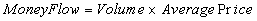
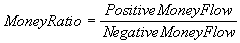
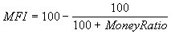

The Money Flow Index (MFI) attempts to measure the strength of money flowing
in and out of a security. It is closely related to the Relative Strength Index
(RSI). The difference between the RSI and Money Flow is that while RSI only
looks at prices, the Money Flow Index also takes volume into account.
Calculating Money Flow is a bit more difficult than the RSI.
First we need the average price for the day; then we need the Money Flow:

Now, to calculate the money flow ratio, you need to separate the money flows for a period into positive and negative. If the price was up on a particular day, this is considered to be "Positive Money Flow". If the price closed down, it is considered to be "Negative Money Flow".

It is the Money Flow Ratio that is used to calculate the Money Flow Index.

The Money Flow ranges from 0 to 100. Just like the RSI, a stock is considered overbought in the 70-80 range and oversold in the 20-30 range.
The shorter the number of days you use, the more volatile the Money Flow is. The default is to use a 14-day average.
The interpretation of the Money Flow Index is as follows: